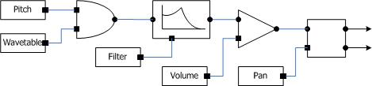
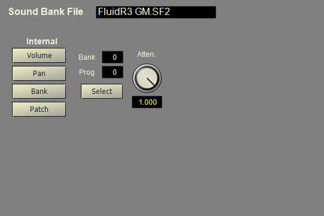

The GM instrument emulates a MIDI wavetable synthesis keyboard instrument with downloadable sounds. The sound files may be loaded from either a SoundFont® (SF2) or DLS sound bank. The present version of this instrument does not implement all possible features of the GM specification and sound bank player, but is sufficient to play most sound bank files based on recorded sounds. In particular, modulators that override implied connections are ignored and only some MIDI controller values are recognized and applied to the instrument.
In order to play sounds using a GM sound bank, the sound bank must be added to the project. An instrument of type GMPlayer must be added and configured to reference the sound bank. Specific sounds are selected using the MIDI bank and program values, or using the configuration values for the instrument. Multiple sound banks can be loaded and used by creating multiple GMPlayer instruments, one for each sound bank.
The following diagram shows the GM Player object internal structure.
This synthesis model is typical of instruments for SF2 and DLS sound bank files. It sums together values for key number, vibrato LFO, pitch wheel and pitch bend envelope to determine the playback frequency. It sums together values for volume, note-on velocity, envelope and modulation LFO to determine the volume level. The modulation wheel adds to the levels for vibrato and tremolo.
The General MIDI Instrument editor is shown below.
Normally, the values for note on volume, pan, bank, and patch are received as MIDI events. The four switches under "Internal" can be used to override the default MIDI values. Use the other controls to set the override values. The override for volume is set in the Notelist score. The override for Pan is the value set on the mixer channel.
The "Atten" setting sets an attenuation scaling for the sound bank. Some sound banks (especially older SF2 files) need to be scaled in order to correct for the limited dynamic range of some synthesizers. By setting an attenuation value less than 1.0 the overall dynamic range of the sounds is decreased and may provide a better balance between sounds. When needed, a value of 0.375 is typical.
Because synthesis parameters are loaded from either the sound bank or received from MIDI controls, the GM instrument does not have configuration values for synthesis parameters. However, configuration values setable on the instrument can override the MIDI bank and patch values. The volume, pan and effects controllers are usually routed to the mixer. Because some SoundFont and DLS presets have internal pan values that are important to the sound, the instrument can bypass the mixer inputs and supply channel volume and pan values directly.
The local parameter can be used to override the default volume, pan and patch values for the instrument. The following values can be added to control local override for the instrument.
| Override | Bit value |
| Bank | 1 |
| Patch | 2 |
| Pan | 4 |
| Effects | 8 |
| Volume | 16 |
When the bank and patch flags are clear, the current MIDI values are used for bank and program. When set, the values must be set using the bank and patch parameter values. When the volume, pan or effects flags are clear, the associated MIDI control value is not applied to the sound at the instrument level. These MIDI values are normally routed to the mixer and applying them at the instrument level would double their respective effects. When these flags are set, the MIDI controller values are applied by the instrument and the mixer input is bypassed.
Attenuation scaling is used to compress the initial attenuation values found in the SF2 or DLS file. This is necessary for some files to compensate for the dynamic range of the original instrument. The scaling value is in db and represents the dynamic range desired. For example, setting attenuation to 60dB causes attenation values to be compressed into a range of 0 to 60dB rather than the default range of 0 to 96dB.
The following table shows the parameter ID numbers and the equivalent XML tag and attribute values for the GM instrument.
Parameter |
Tag |
Attribute |
Name |
Use |
16 |
gm |
local |
local |
Flags to control local override for patch, volume and pan settings. |
17 |
|
bank |
bank |
Patch bank number. |
18 |
|
prog |
prog |
Patch program number. |
19 |
|
attn |
attn |
Attenuation scaling. |
<instr id="" type="GMPlayer" name="" desc="">
<gm local="1" bank="0" prog="0" atten="96">
Soundbank Name
</gm>
</instr>